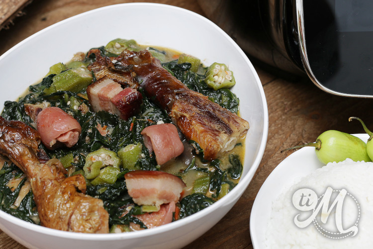

Le Calalou
Le calalou est un ragoût vert emblématique, symbole du riche héritage afro-guyanais transmis à travers les générations. Ce plat complet et d'une grande profondeur aromatique repose sur la cuisson prolongée de feuilles vertes locales.
Mijoté patiemment avec des herbes, des morceaux de porc salé, des crabes de terre et souvent rehaussé de viandes boucanées, le calalou offre une texture onctueuse et fondante unique, très représentative des repas dominicaux et des jours de fête en Guyane.
L'histoire et le secret du Calalou
Le calalou tire ses origines lointaines d'Afrique de l'Ouest, apporté dans les bagages culturels des populations déportées et préservé fièrement par les communautés marronnes (Bushinengues) et créoles. Le terme désignait à la fois la plante de base et le ragoût lui-même.
Le secret technique de ce plat réside principalement dans le choix et la préparation des feuilles. Traditionnellement, on utilise les feuilles de la plante calalou (une variété d'amarante) ou des feuilles de taro (parfois appelées chou caraïbe). Elles doivent être lavées, triées, puis finement ciselées avant de subir une cuisson très longue à feu doux pour briser leurs fibres et éliminer toute amertume ou acidité naturelle.
Un autre secret indispensable pour obtenir la signature gustative "péyi" est l'équilibre des textures et des apports terre-mer. Le jus libéré par le crabe de terre se mêle au gras des salaisons et au parfum fumé des boucanes, transformant le bouillon d'herbes en un jus onctueux et extrêmement savoureux.
En Guyane, ce ragoût se sert traditionnellement bien chaud, nappé sur un lit de riz blanc, et s'accompagne d'un traditionnel pimentade pour les amateurs de sensations fortes.